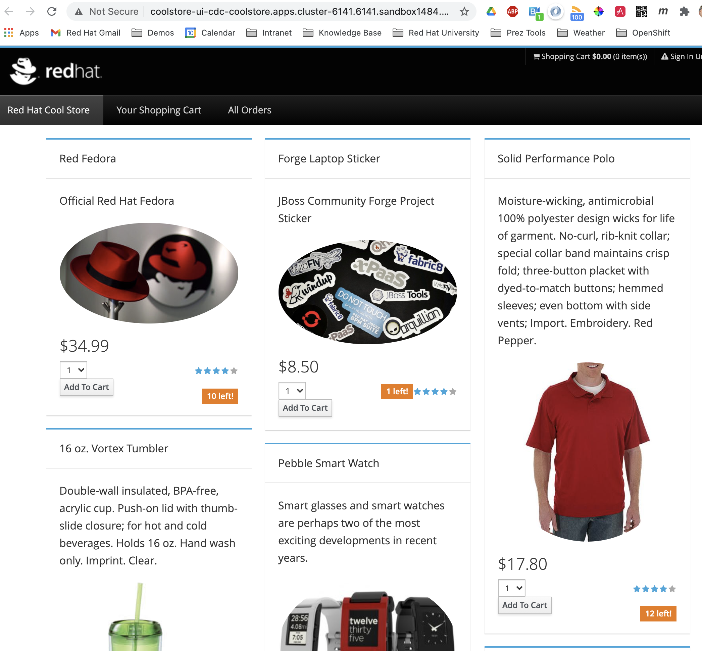
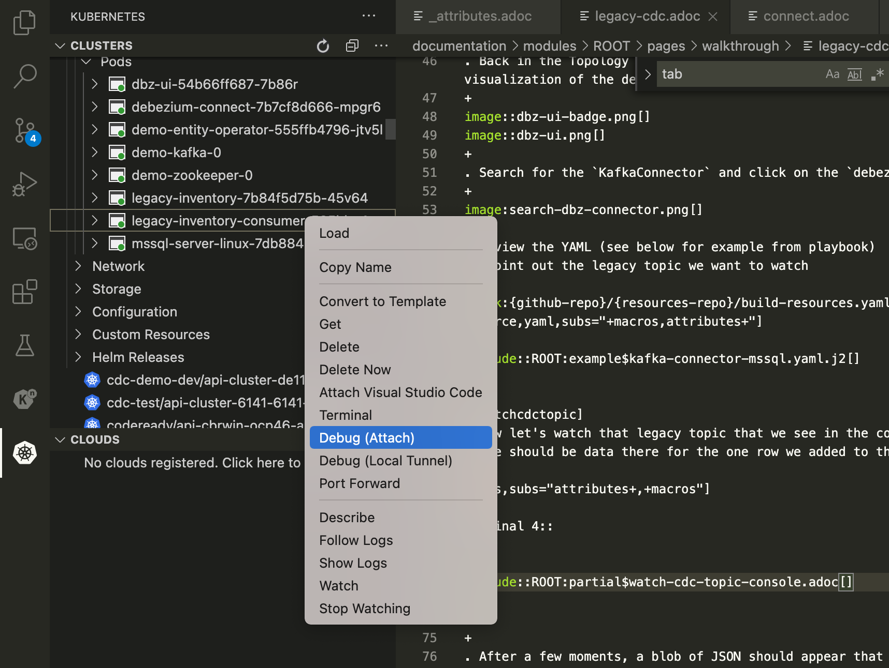

Demo Walkthrough
Deploy Legacy Consumer
Demonstrating connector
-
In anticipation of the connector running, let’s first start
sternin a terminal IMPORTANT: Terminal 4 should still be watching the kafka-topic as per these instructions, which are repeated below -
With the Topology View visible, run the following ansible command to create a deployment and configmap for the connector
-
Once the app is deployed, you should see output from
sternthat looks like this:legacy-inventory-consumer-585bbc4fb8-gg9wt › legacy-inventory-consumer legacy-inventory-consumer-585bbc4fb8-gg9wt legacy-inventory-consumer 2021-03-11 07:34:40,136 INFO [org.mhi.cdc.CdcKafkaConsumer] (vert.x-eventloop-thread-0) Got a cdc event with key {"schema":{"type":"struct","fields":[{"type":"string","optional":false,"field":"ItemId"},{"type":"string","optional":false,"field":"__dbz__physicalTableIdentifier"}],"optional":false,"name":"legacy_inventory_cdc.Key"},"payload":{"ItemId":"329299","__dbz__physicalTableIdentifier":"mssql-server-linux.dbo.Inventory"}} legacy-inventory-consumer-585bbc4fb8-gg9wt legacy-inventory-consumer 2021-03-11 07:34:40,725 INFO [org.mhi.cdc.CdcKafkaConsumer] (vert.x-eventloop-thread-0) Got a snapshot cdc event [op=r] legacy-inventory-consumer-585bbc4fb8-gg9wt legacy-inventory-consumer 2021-03-11 07:34:40,725 INFO [org.mhi.cdc.CdcKafkaConsumer] (vert.x-eventloop-thread-0) New/Updated a payload with item name of Red Fedora (itemId: 329299) legacy-inventory-consumer-585bbc4fb8-gg9wt legacy-inventory-consumer 2021-03-11 07:34:41,452 INFO [org.mhi.cdc.CdcKafkaConsumer] (vert.x-eventloop-thread-0) Got a cdc event with key {"schema":{"type":"struct","fields":[{"type":"string","optional":false,"field":"ItemId"},{"type":"string","optional":false,"field":"__dbz__physicalTableIdentifier"}],"optional":false,"name":"legacy_inventory_cdc.Key"},"payload":{"ItemId":"329299","__dbz__physicalTableIdentifier":"mssql-server-linux.dbo.Inventory"}} legacy-inventory-consumer-585bbc4fb8-gg9wt legacy-inventory-consumer 2021-03-11 07:34:41,520 INFO [org.mhi.cdc.CdcKafkaConsumer] (vert.x-eventloop-thread-0) New/Updated a payload with item name of Red Fedora (itemId: 329299) -
Go back to the coolstore website and now the quantity of the Fedora in Coolstore should match what’s in the Legacy Inventory. Switch back and forth between both to prove

-
Next let’s do a batch upload of all the items and see them get populated in the store
-
Follow the following instructions, but using the file
inventory-coolstore.csv# FIXME INCLUDE
Debugging the Connector
-
From within Visual Studio, use the Kubernetes extension to locate the legacy-consumer pod and attach the debugger to it
 -
User cmd+p to open
example/cdc-legacy-consumer/src/main/java/org/mhildenb/cdcdemo/CdcKafkaConsumer.javaquickly -
Set a breakpoint in the CdcKafkaConsumer.receive method
-
In the legacy application, edit a field to trigger a change
-
As you step through the breakpoints, point out have the adaptor has been configured from this
application.propertiesansible templatekind: ConfigMap apiVersion: v1 metadata: name: connector-runtime-properties data: application.properties: |- # NOTE: See main properties file at $DEMO_HOME/example/cdc-legacy-consumer/src/main/resources/application.properties # Kafka properties for function running on cluster mp.messaging.incoming.legacy-inventory-cdc.bootstrap.servers={{ kafka_name }}-kafka-bootstrap.{{ kafka_project }}:9092 # Rest client properties org.mhildenb.cdcdemo.InventoryProxy/mp-rest/url=http://inventory.{{ coolstore_project }}.svc.cluster.local:8080 org.mhildenb.cdcdemo.CatalogProxy/mp-rest/url=http://catalog.{{ coolstore_project }}.svc.cluster.local:8080
Enable Debezium Connector
Configure SQL Database
See last part of ansible/demo/templates/configmap-data-sql.yaml.j2 and instructions here
Demonstrate Debezium
-
Connect to database using Adminer per instructions here
-
In another terminal watch where the order events will go
oc exec -it demo-kafka-0 -- bin/kafka-console-consumer.sh --bootstrap-server localhost:9092 --topic mssql-server-linux.dbo.Orders --from-beginning -
Go to adminer and create a new entry
Generate legacy-order-adaptor
Create JSON to POJO
-
Start with some example
.jsongenerated from CDC event in this section -
Navigate to this site and paste in the json per screenshot

-
Click the link to download the zip file
-
expand into the
functionsdirectory -
Update tests to show JSON to POJO working